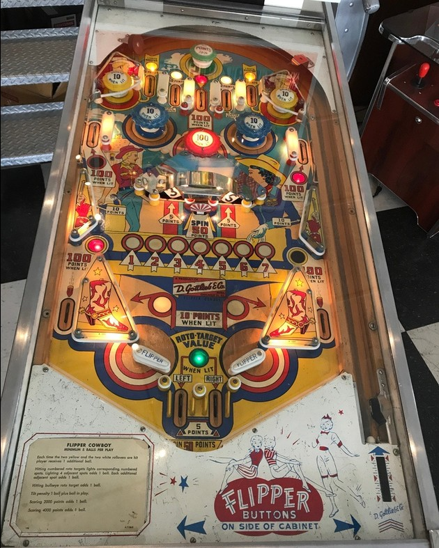

Not to be confused with Flipper, Flipper Clown, Flipper Fair, or Flipper Pool, which are all other games released by Gottlieb in the first half of the 1960s.
The outer top lanes score 5 points. Making one of these lanes unlights it and lights the nearby passive yellow bumper in the top corners of the game for 10 points instead of 1. The 2nd and 4th top lanes from left score 10 points and light the nearby blue pop bumper for 10 points instead of 1. Lighting all 4 bumpers will reset the top lanes, turn off the yellow and blue bumpers, and award 1 extra ball. The center top lane always scores 100 points, and the green passive bumper at the top of the game always scores 50 points and spins the roto-wheel.
The roto-target is spun when the green passive bumper at the top of the game is hit, when the center standup target is hit, or when a ball drains. All of these also award 50 points. At any given time, two panels of the roto-target can be hit. All roto-target panels score 5 points. If the roto-target panel has a bullseye, hitting it scores 1 instant extra ball. If the roto-target panel has a number, hitting it lights that number on the playfield (1-2-3-4-5-6-7). Lighting any 4-in-a-row in the number sequence awards an extra ball. Each additional number earned which extends the sequence also earns an extra ball. Notice that any 4-in-a-row requires collecting #4, so pick it up when you can if you don't have it yet. The left and right roto-target panels also have their value collected by draining down the left or right center out lanes between the flippers, respectively.
1-point switch hits alternate which of the upper side lanes is lit for 100 points instead of 5, which of the out lanes is lit for 100 points instead of 5, and which of the slingshots is lit for 10 points instead of 1.
All balls ends with a 50-point end of ball bonus which spins the roto-wheel. Multiple extra balls can be earned per ball in play, up to a maximum of 10 total balls remaining at any one time. Tilt ends the ball in play, and subtracts one additional ball from your total.
The below picture of Flipper Cowboy's playfield was taken from Pinside image #2748842.
